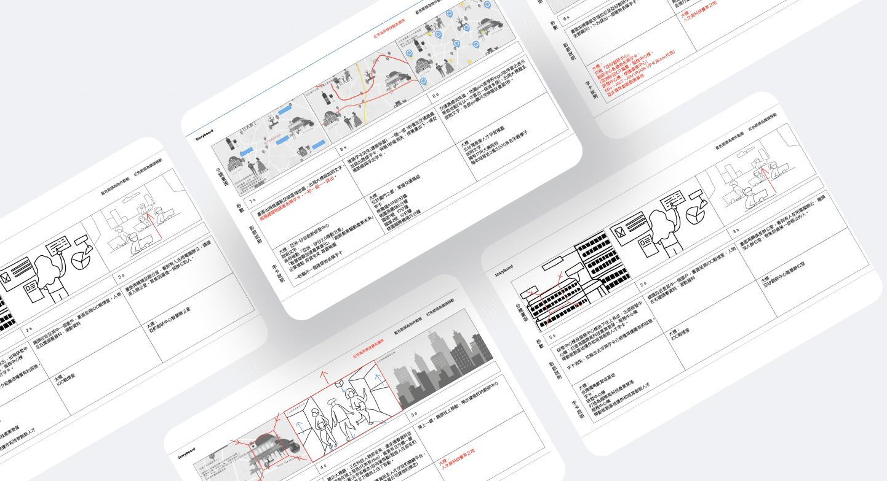
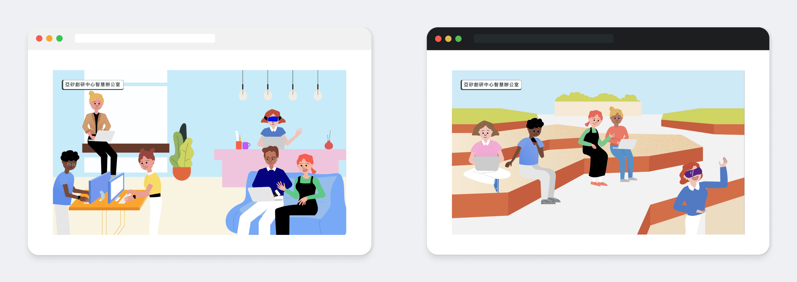
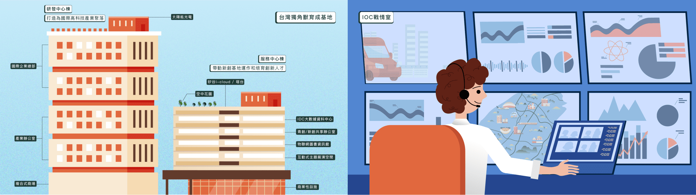
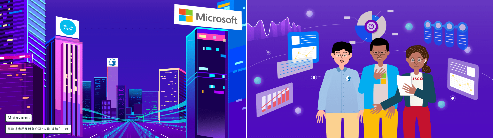

桃園航空城動畫
Type Storyboard 腳本製作 / Art Design 美術設計
桃園航空城是位在青埔區的新興科技場域，擁有便利的交通、附近集結 17 所學術單位並且有多項娛樂設施。為吸引各大科技大廠進駐以及讓大眾來此區域就職或是進行娛樂活動，以動畫來呈現桃園航空城的多項特色與優點。
AI Center Logo Design

此案我負責的部分為腳本內容設計與美術設計，動態製作則與動畫師合作完成，在設計腳本運鏡時，需要與動畫師討論如何呈現動態較適合。
在製作動畫宣傳片之前，桃園航空城已經先行拍攝了運用實景與3D呈現的宣傳影片，而這次以動畫呈現，目的除了吸睛以外，還必須讓所有宣傳內容容易被大眾理解與喜歡。
所以在腳本設計上與業主反覆溝通與修改多次後才定案，一開始因為影片定位為宣傳性質並不具有故事性，因此在人物角色設計上並沒有表情，經過後續討論，希望人物可以呈現「期待、興奮」的正向情緒，因此改為現在有表情的人物設定，場景、顏色等設定上，也同樣反覆溝通多次。
在製作動畫宣傳片之前，桃園航空城已經先行拍攝了運用實景與3D呈現的宣傳影片，而這次以動畫呈現，目的除了吸睛以外，還必須讓所有宣傳內容容易被大眾理解與喜歡。
所以在腳本設計上與業主反覆溝通與修改多次後才定案，一開始因為影片定位為宣傳性質並不具有故事性，因此在人物角色設計上並沒有表情，經過後續討論，希望人物可以呈現「期待、興奮」的正向情緒，因此改為現在有表情的人物設定，場景、顏色等設定上，也同樣反覆溝通多次。

Styleframe

在設計完草圖腳本後接著進行 Styleframe
的繪製，目的是讓動畫師可以更清楚角色位置、色彩、場景元件的詳細位置配置，也同時讓業主可以對動畫最後的呈現有初步了解，在這個階段也會依照業主、動畫師等各方面的建議來修正畫面呈現，例如亞矽創研中心智慧辦公室的呈現，右側是舊版的智慧辦公室，在吸取意見後改為左邊的呈現方式，多一些辦公室的感覺，角色也修正為更符合科技人的形象。
人文與科技薈萃之地的人物也添加了一些科技人的元素，例如、無線耳機、眼鏡、Apple Watch、手機等。


人文與科技薈萃之地的人物也添加了一些科技人的元素，例如、無線耳機、眼鏡、Apple Watch、手機等。